The slide of the lecture is on the left, the same figure on the right, computed in the browser from the same data. The ▶ button moves the parameter step by step.
Value-at-Risk and Expected Shortfall · Coherent Risk Measures · Estimation Methods · How Precise Are VaR and ES? · Conditional VaR and ES · Extreme Value Theory · The Horizon: Square-Root-of-Time · Portfolio VaR and Risk Contributions · Liquidity and Regulation · Case Study: Deep Quantile Regression for VaR · AI for Scientific Discovery
Value-at-Risk and Expected Shortfall
VaR and ES on the S&P 500
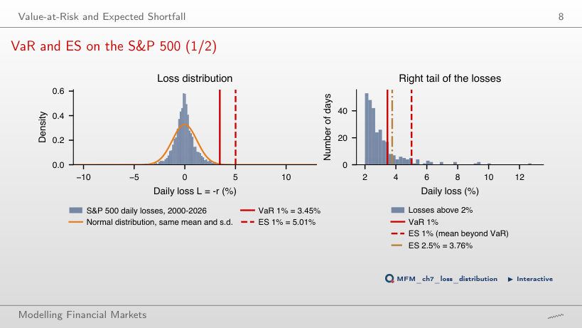
Answer
5.01%, which is ES 1%. The threshold was exceeded on 68 of 6,717 days (1.01%). The Normal distribution with the same mean and standard deviation gives a VaR 1% of 2.80% and an ES 1% of 3.21%: its tails are too thin.
Coherent Risk Measures
Subadditivity: VaR Fails, ES Holds
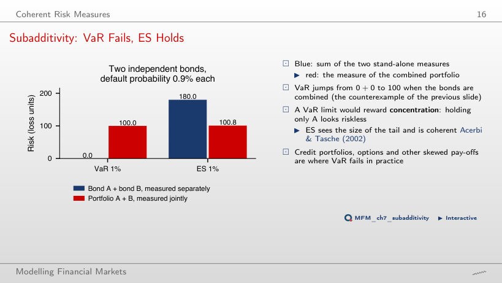
Answer
The default probability of each bond, 0.9%, is below the 1% level, so the individual VaR is 0. The probability that at least one defaults is 1.79%, above 1%, so the portfolio VaR is 100 > 0 + 0. ES is subadditive: 100.8 for the portfolio against 90 + 90 = 180. VaR violates subadditivity only when the default probability lies between about 0.5% and 1%.
Estimation Methods
Five Methods Across Tail Probabilities
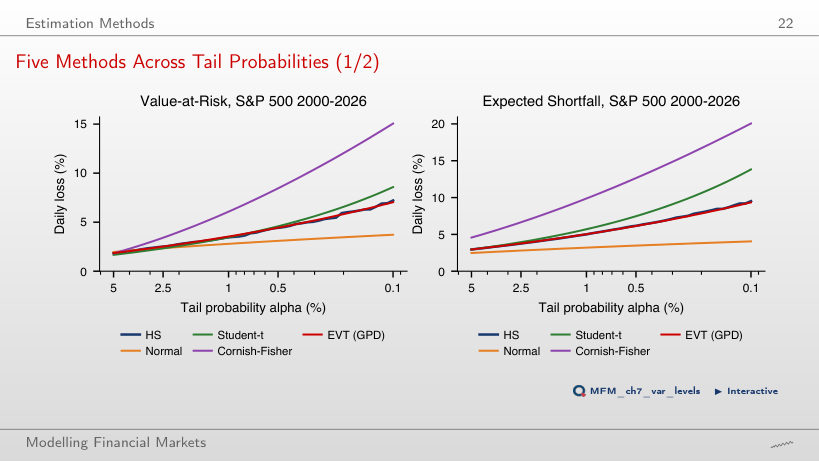
Answer
In the far tail. At α = 0.1%, VaR is 7.22% historical, 7.04% with EVT, 8.58% with Student-t and 15.06% with Cornish–Fisher, while the Normal distribution gives only 3.72%. At α = 5%, all five values lie between 1.67% and 1.97%.
How Precise Are VaR and ES?
Precision on the S&P 500
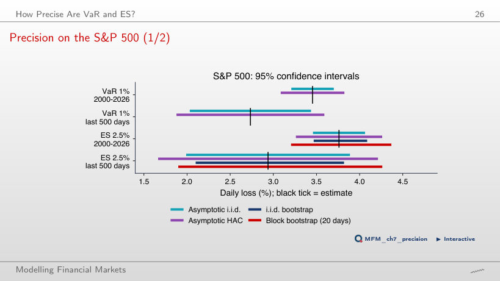
Answer
13 losses. The HAC interval is 2.55 pp wide and the block bootstrap interval 2.36 pp. On the 2000–2026 sample, volatility clustering widens the ES interval from 0.60 pp (i.i.d.) to 1.00 pp (HAC), and the bootstrap interval from 0.62 pp to 1.16 pp.
Conditional VaR and ES
Historical vs Filtered Historical Simulation: S&P 500
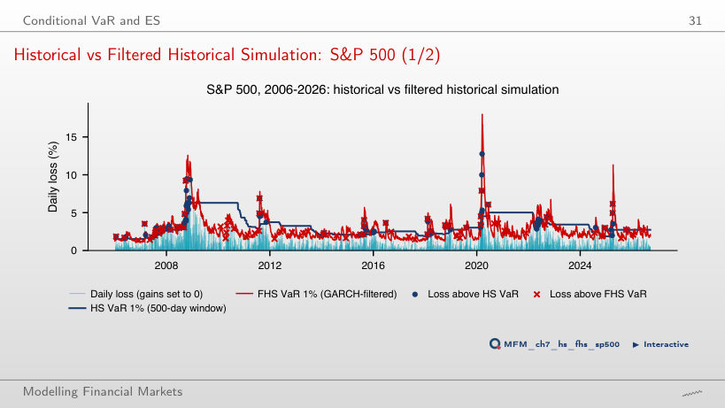
Answer
FHS, with 1.54% (80 of 5,210 days), against 1.67% for historical simulation on 500 days and 2.34% for GARCH with Normal shocks. The exceedances of historical simulation come in clusters, in 2008 and 2020, because the window reacts with months of delay.
CAViaR vs Filtered Historical Simulation, Out of Sample
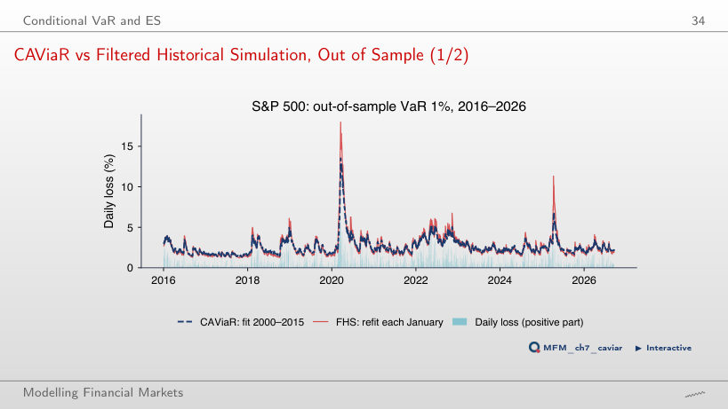
Answer
About 6.4 days: the half-life is ln 0.5 / ln β₁, with β₁ = 0.897. Out of sample, in 2016–2026, CAViaR and FHS each have 35 exceedances (1.30%), and the mean pinball loss is 0.039 for CAViaR and 0.037 for FHS.
Extreme Value Theory
Monthly Maxima of S&P 500 Losses
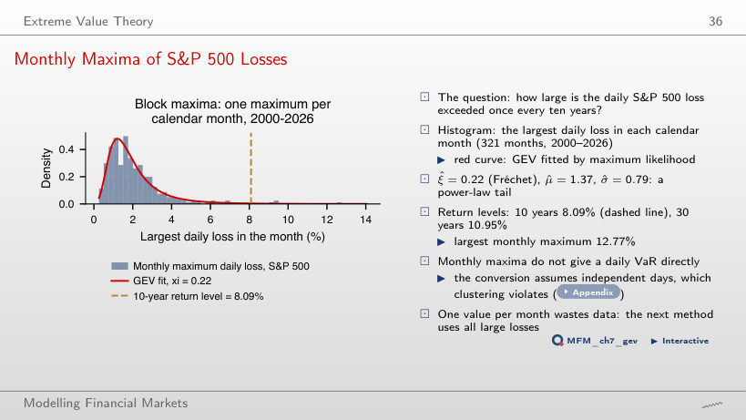
Answer
8.09%, the 10-year (120-month) return level of the GEV distribution fitted to the monthly maxima, with ξ = 0.22. Four of the 321 monthly maxima exceed it, and the largest observed monthly maximum is 12.77%.
Mean Excess Plot: S&P 500
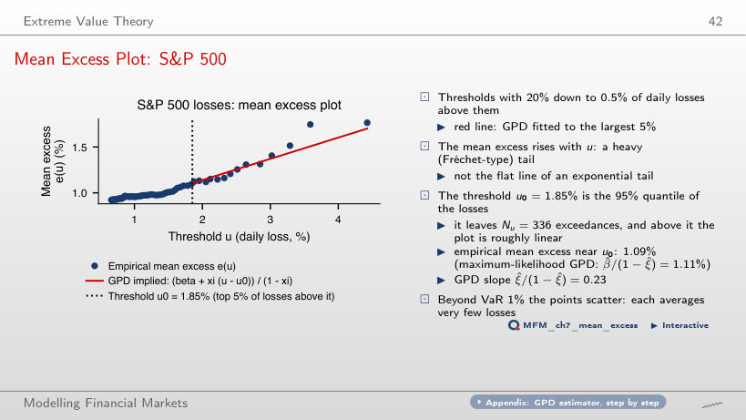
Answer
Because the tail is heavy: for a GPD with ξ > 0, e(u) is linear with slope ξ/(1 − ξ) = 0.23. At the threshold u₀ = 1.85% (the largest 5% of losses, 336 exceedances), the empirical mean excess is 1.09% and the GPD gives 1.11%. For an exponential tail the plot would be flat.
GPD Tails: S&P 500 and Bitcoin
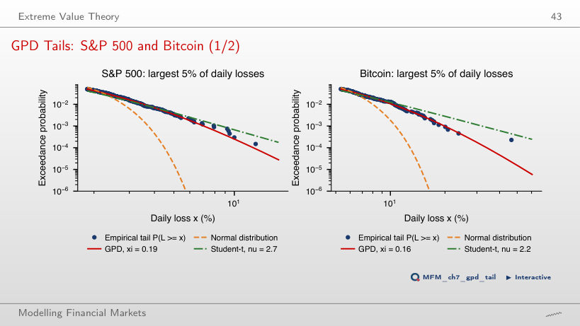
Answer
The shape estimates are close: ξ = 0.19 (SE 0.065) for the S&P 500 and ξ = 0.16 (SE 0.078) for Bitcoin, so the difference is not significant. Bitcoin has a much larger scale, however: the GPD VaR 1% is 10.23%, against 3.54% for the S&P 500.
Conditional EVT on the S&P 500
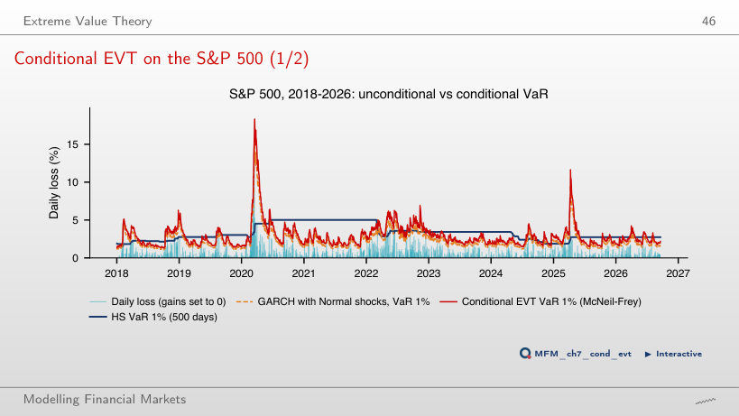
Answer
Because the standardised shocks have heavier tails than the Normal distribution. In 2018–2026 (2,190 days), the GARCH-Normal VaR 1% is exceeded on 2.42% of the days, conditional EVT on 1.23% and historical simulation on 500 days on 1.60%. Conditional EVT keeps the GARCH dynamics and corrects the level with a GPD tail of the residuals.
The Horizon: Square-Root-of-Time
Square-Root-of-Time in the Data
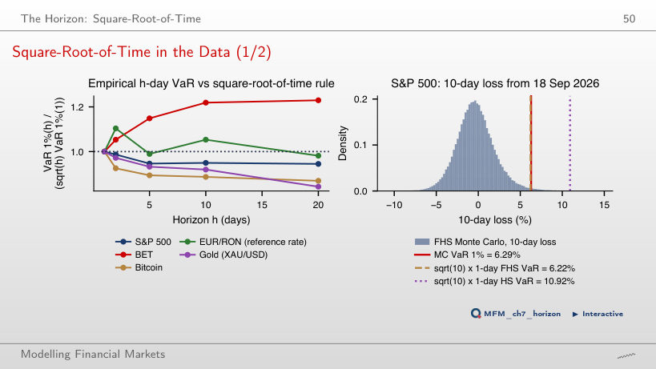
Answer
It depends on the series. The ratio of the empirical 10-day VaR 1% to √10 × the one-day VaR is 1.22 for BET (first-order autocorrelation 0.109) and 1.05 for EUR/RON, so the rule understates the risk. For the S&P 500 (0.95), gold (0.92) and Bitcoin (0.89) the rule is conservative. For the S&P 500, filtered Monte Carlo gives 6.29%, against 6.22% for √10 × the one-day filtered VaR.
Portfolio VaR and Risk Contributions
Who Contributes the Risk?
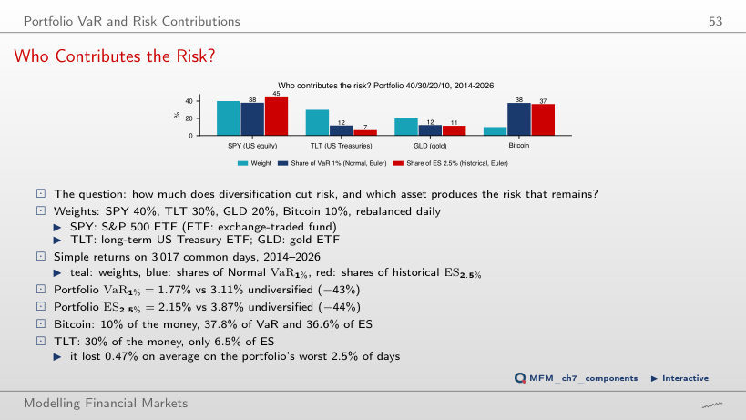
Answer
37.8% of VaR 1% (Normal, Euler) and 36.6% of ES 2.5% (historical). TLT, with 30% of the capital, accounts for only 6.5% of ES. Diversification lowers VaR 1% from 3.11% (the sum of the individual VaRs) to 1.77%.
Liquidity and Regulation
VaR 1% vs ES 2.5% on Five Assets
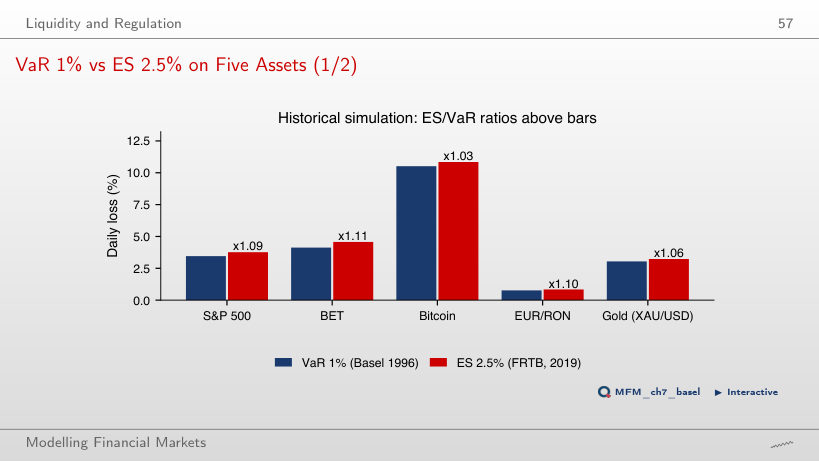
Answer
Between 1.03 (Bitcoin) and 1.11 (BET): 1.09 for the S&P 500, 1.10 for EUR/RON and 1.06 for gold. Under the Normal distribution the ratio is 2.338/2.326 ≈ 1.005. Moving from VaR 1% to ES 2.5% therefore raises the one-day measure by 3–11%.
Case Study: Deep Quantile Regression for VaR
Case Study: Relative Forecast Error, α = 1%
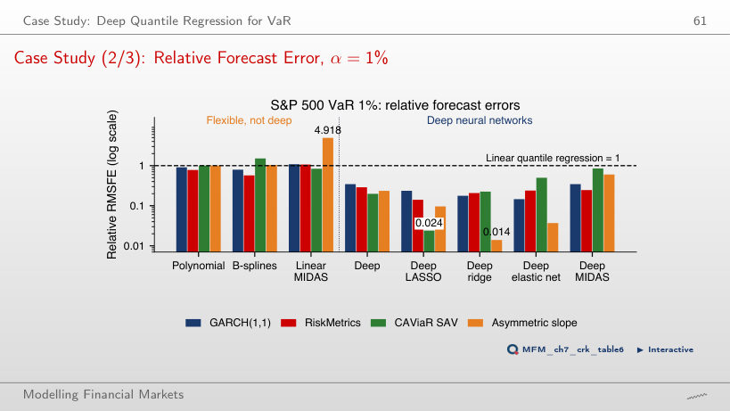
Answer
Not directly. All 20 bars of the deep networks (deep MIDAS included) are below 1, between 0.014 and 0.850, but RMSFE is minimised by the conditional mean, not by the quantile. The accuracy of a quantile forecast is compared with the pinball loss. The result also comes from a single fixed calibration window.
AI for Scientific Discovery
Mini-Case: Can We Rank ES Models?
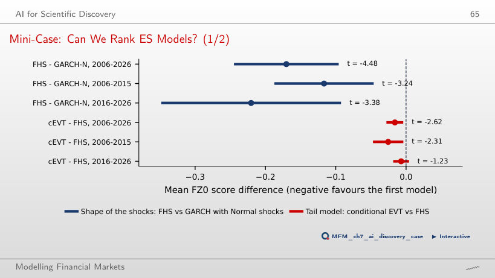
Answer
No. The mean FZ0 score difference is significantly negative over 2006–2026 (t = −2.62) and in 2006–2015 (t = −2.31), but not in 2016–2026 (t = −1.23; interval [−0.018, 0.004]). The rule requires significance at 5% in both halves. FHS against GARCH–Normal meets it: t = −3.24 and t = −3.38.
Daily losses L = −r, in %, up to 18 September 2026. S&P 500, BET, Bitcoin, gold (XAU/USD) and the ETFs SPY, TLT, GLD: EODHD daily prices; EUR/RON: the NBR reference rate. Case study: Table 6 of Chronopoulos, Raftapostolos and Kapetanios (2024), Journal of Financial Econometrics.